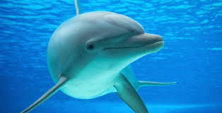

curiosidades
Para atrair mais pessoas para esse mundo da biologia marinha, que tal conhecer curiosidades sobre os animais que possivelmente você conhece?
O tubarão-baleia é o maior peixe do mundo, podendo atingir até 12 metros de comprimento. Apesar de seu tamanho impressionante, ele é um animal pacífico e se alimenta principalmente de plâncton.

Os polvos são conhecidos por sua inteligência notável. Eles possuem a capacidade de resolver problemas, usar ferramentas e até escapar de aquários complexos.

Os golfinhos são animais altamente sociais e comunicativos. Eles utilizam uma variedade de sons para se comunicar e podem reconhecer a si mesmos em espelhos, indicando um alto nível de autoconsciência.